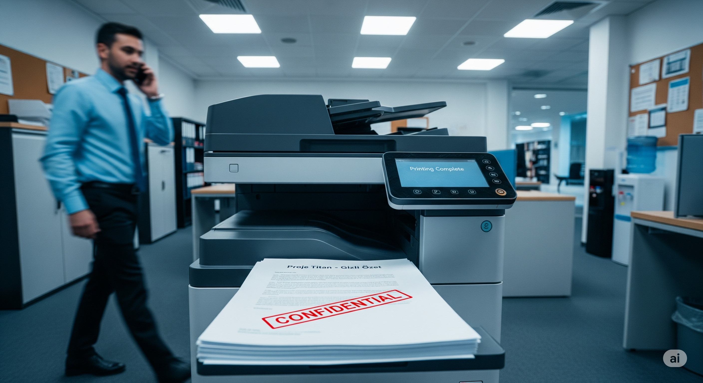
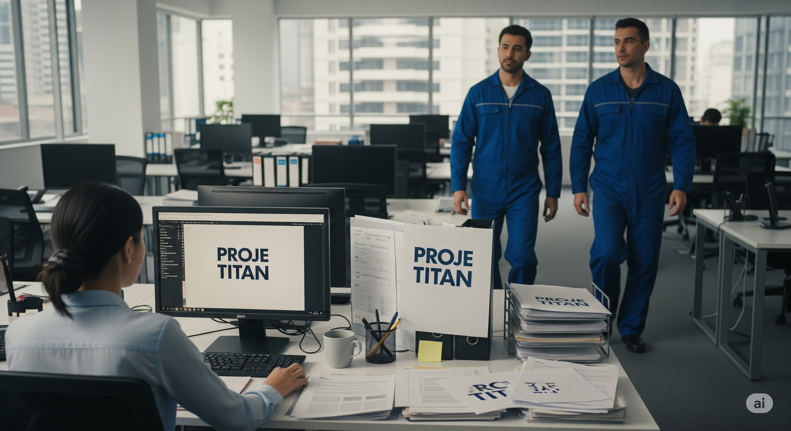
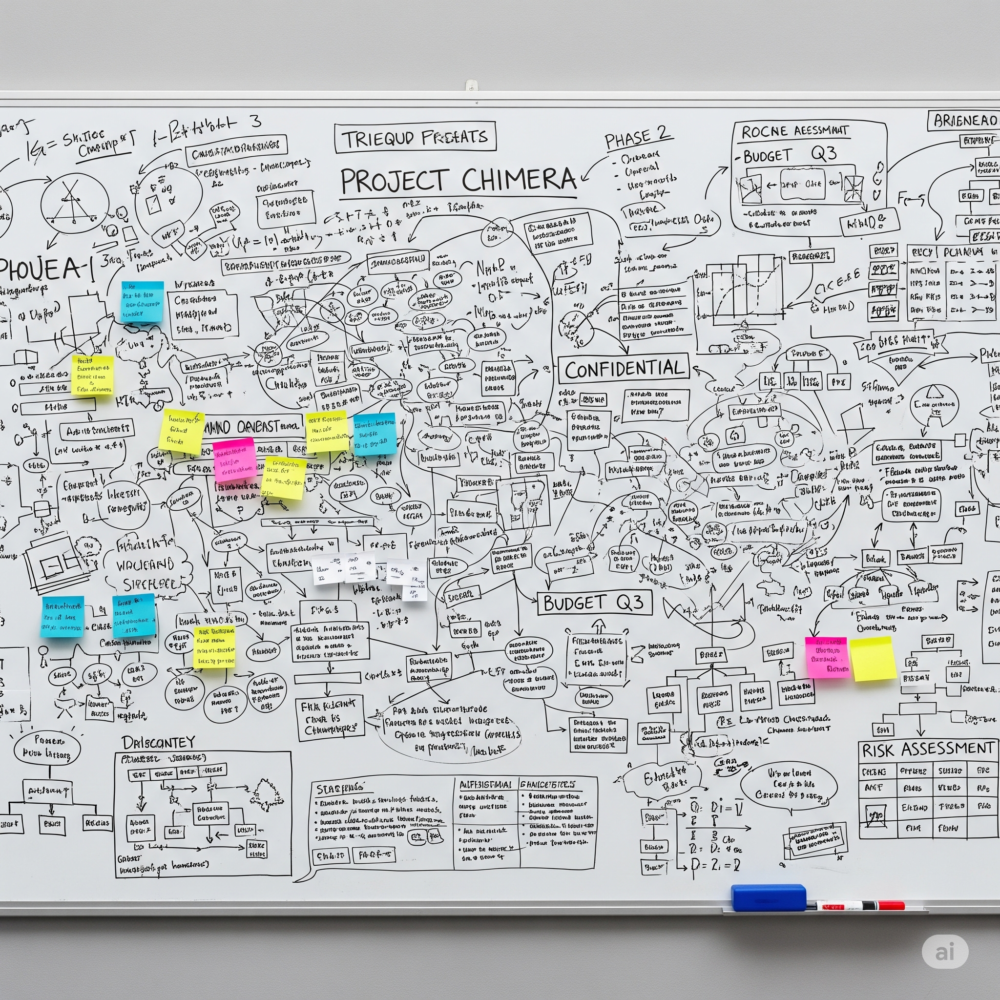

Bu simülasyonda, "Temiz Masa ve Temiz Ekran" politikasının önemini yaşayarak öğreneceksiniz. Günlük iş temposu içinde farkında olmadan bıraktığınız küçük bir açık, şirket için ne kadar büyük bir riske dönüşebilir? Vereceğiniz kararlar, ISO 27001 standartlarına uyumunuzu ve fiziksel ortamdaki güvenlik farkındalığınızı gösterecek.
Temel Metrikler
Masa GüvenliğiFiziksel belgelerin güvenli saklanması.
ISO 27001 UyumuTemiz Masa/Ekran politikasına bağlılık.
Veri Sızıntı RiskiHassas verilerin açığa çıkma ihtimali.
Masa Güvenliği
100
Ekran Güvenliği
100
ISO 27001 Uyumu
100
Veri Sızıntı Riski
0
Kalan Süre
10:00
Simülasyon Tamamlandı: Değerlendirme Raporu
Simülasyonu başarıyla tamamladınız. Temiz Masa ve Temiz Ekran politikalarına uyum konusundaki kararlarınızın analizi aşağıdadır.
Karar Zaman Tüneli
Çıkarılan Dersler
Puan Dökümü
Aşama 1: Öğle Yemeği Aceleciliği
Saat 12:30 ve arkadaşlarınız öğle yemeği için sizi bekliyor. Masanızın üzerinde, son derece gizli bir birleşme & satın alma projesi olan "Proje Titan" ile ilgili çıktılar ve el yazısı notlar duruyor. Bilgisayar ekranınızda ise projenin finansal verilerini içeren bir Excel tablosu açık.
Hızla yemeğe çıkmanız gerekiyor. Ne yaparsınız?
Aşama 2: Yazıcıdaki Unutkanlık
"Proje Titan"ın 10 sayfalık özetini yazıcıya gönderdiniz. Yazıcının bulunduğu kata indiğinizde, acil bir telefon geliyor ve 10 dakikalık önemli bir görüşme yapmanız gerekiyor. Çıktılar ise yazıcının tepsisinde sizi bekliyor.

Bu durumda nasıl bir yol izlersiniz?
Aşama 3: Beklenmedik Ziyaretçiler
Masanızda "Proje Titan" belgeleriyle çalışırken, ofis katınıza daha önce görmediğiniz, dış hizmet firmasına ait logolu üniformalar giyen bir bakım ekibi giriyor. Klimaları kontrol etmek için masalar arasında dolaşmaya başlıyorlar.

Bu durum karşısında ne yaparsınız?
Aşama 4: Toplantı Odası Molası
Ekibinizle "Proje Titan" üzerine bir toplantı yapıyorsunuz. Projenin tüm stratejik detayları, finansal hedefleri ve risk analizleri toplantı odasındaki büyük ekrana yansıtılmış durumda. Toplantıya 5 dakikalık bir kahve molası veriliyor ve herkes odadan çıkıyor.
Odadan en son siz çıkıyorsunuz. Ne yaparsınız?
Aşama 5: Beyaz Tahta Tehlikesi
Toplantınız bitti ve herkes odadan ayrıldı. Ancak, toplantı boyunca kullandığınız beyaz tahta, "Proje Titan"ın tüm yol haritasını, kilit personel isimlerini ve potansiyel satın alma rakamlarını içeren şema ve notlarla dolu.

Bu durumda doğru davranış nedir?
Aşama 6: Gün Sonu Yorgunluğu
Saat geç oldu, yorucu bir gün geçirdiniz ve bir an önce eve gitmek istiyorsunuz. Masanızda gün boyunca kullandığınız "Proje Titan" notları, karalamalar ve bir-iki resmi belge duruyor. Bilgisayarınız ise hala açık.
Bu yorgunlukla son görevinizi nasıl yerine getirirsiniz?
Aşama 7: Güvenlik Denetimi
Ertesi sabah, Bilgi Güvenliği Yöneticisinden (CISO) bir e-posta alıyorsunuz: "Değerli Çalışanlar, dün gece ofislerimizde habersiz bir 'Temiz Masa & Temiz Ekran' denetimi gerçekleştirilmiştir. Maalesef, birçok masada ve toplantı odasında hassas bilgilere ulaşılabilecek ciddi zafiyetler tespit edilmiştir. Bu simülasyon, dün geceki denetim sırasında sizin masanızda ve sorumlu olduğunuz alanlarda tespit edilen durumları yansıtmaktadır."